<!--
  Generated template for the SuccessPage page.

  See http://ionicframework.com/docs/components/#navigation for more info on
  Ionic pages and navigation.
-->
<!-- <ion-header>
  <ion-navbar>
    <ion-title>success</ion-title>
  </ion-navbar>
</ion-header>
 -->
<ion-content>
    <div [ngClass]="{'loader': loaderAnimate, 'loader-hide': !loaderAnimate}">
        <div class="maploader">
          <div class="lds-facebook"><div></div><div></div><div></div></div>
        </div>
        <div class="loading-text">
      
        </div>
      </div>
  <div class="contain">
      


    <div class="slogan" padding>
      <H2>SUCCESS</H2>
      <p>Your message has been sent</p>
   
      
    </div>


    <div class="continue">
     

      <button (click)="complete()" ion-button style="margin-top:3.5%;background:rgb(204, 158, 20)" class="btn warning" color="custom" >Thank You</button>

    </div>


</div>
<div class="container">

</div>
</ion-content>
